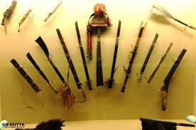

History of arunachalpradesh
Arunachal Pradesh, state of India. It constitutes a mountainous area in the extreme northeastern part of the country and is bordered by the kingdom of Bhutan to the west, the Tibet Autonomous Region of China to the north, Myanmar (Burma) and the Indian state of Nagaland to the south and southeast, and the Indian state of Assam to the south and southwest.
The capital is Itanagar.
Arunachal Pradesh, meaning “Land of the Rising Sun,” long has been a recognized region of the Indian subcontinent, receiving mention in such ancient Hindu literature as the Kalika-purana and the epic poems Mahabharata and Ramayana.
Formerly known as the North East Frontier Agency (from the British colonial era), the area was part of Assam until it was made the Indian union territory of Arunachal Pradesh in 1972, and in 1987 it became an Indian state.
The region, however, has been the subject of an ongoing sovereignty dispute between India and China.
Area 32,333 square miles (83,743 square km). Pop. (2011) 1,382,611.
Pema Khandu
Chief Minister Of Arunachalpradesh
CULTURES
Arunachal Pradesh has an array of notable cultural institutions, which together underscore the state’s religious and cultural diversity. The state museum, which houses an ethnographic collection consisting of local archaeological finds, musical instruments, weavings, carvings, and other examples of material culture, is located in the capital, Itanagar.

Tribal peoples in Arunachal Pradesh wear distinctive garments and headdress. The art of weaving is especially important, and textile designs are unique to each group. Dances are an integral part of community life. Losar, Mopin, and Solung are major tribal festivals. At such festivals, villagers often drink millet or rice beer, as well as tea.


Golden Pagoda
Golden Pagoda at Namsai in Arunachal Pradesh
FAMOUS PLACES:


FESTIVLAS
The festivals form a significant part of that cultural heritage. If you are lucky enough to be visiting the state during the time of a festival, make sure not to miss the beautiful and engaging festivals. Each festival of Arunachal Pradesh has its own belief or story integral to the people of the place.
- Siang River Festival (Yomgo River Festival)
The festival offers adventure activities like elephant race, traditional boat race, River rafting, Food Festivals, Folk dances, Cultural Shows, Hot air balloon Paragliding
- Pangsau Pass Winter Festival
It is a three-day festival celebrated in January every year. The festival celebrates the ethnicity and folk songs and dances of the state.
- Ziro Festival of Music
The festival is Arunachal’s Sunburn Festival. The festival invites music lovers from all over the place and other northeast states.
- Solung
Solung is an agriculture festival of Arunachal Pradesh held in monsoon month. The festival is celebrated for ten days and is one of the most popular festivals in the state, celebrated especially by the Adi community.
- Losar Festival
The festival is celebrated by Monpa tribe to welcome a new year. The festival is celebrated in Tawang, which is one of the major tourist attractions in Arunachal Pradesh, is best visited during the festival time
- Sanken (Sangken)
Sanken festival is celebrated on 14th February and is an important religious festival in Arunachal Pradesh. Although entire Arunachal celebrates it, majorly it is celebrated by the Khampti tribe of Lohit district.
- Dree Festival
The festival is celebrated with full zest and zeal by the Apatani tribe of Lower Subansiri district of Arunachal Pradesh. An ideal place to see the celebration of Dree is Ziro.
- Boori Boot
It is a festival of gratitude for the successful harvest in the state of Arunachal Pradesh. The festival is held for three days and is celebrated by the Hill-Miris community in February.
- Nyokum
It is a festival of the Nyishi tribe of Arunachal Pradesh and is celebrated on 28th February every year. The festival is celebrated for the harmony and prosperity of the people.
- Loku
Loku festival is celebrated to bid farewell to winters by the Nocte Tribe of Tirap district.
- Bascon Festival
The BASCON festival is celebrated by the Galo tribe of Arunachal Pradesh every year in November. The festival celebrates the culture and heritage of the Galo Tribe.